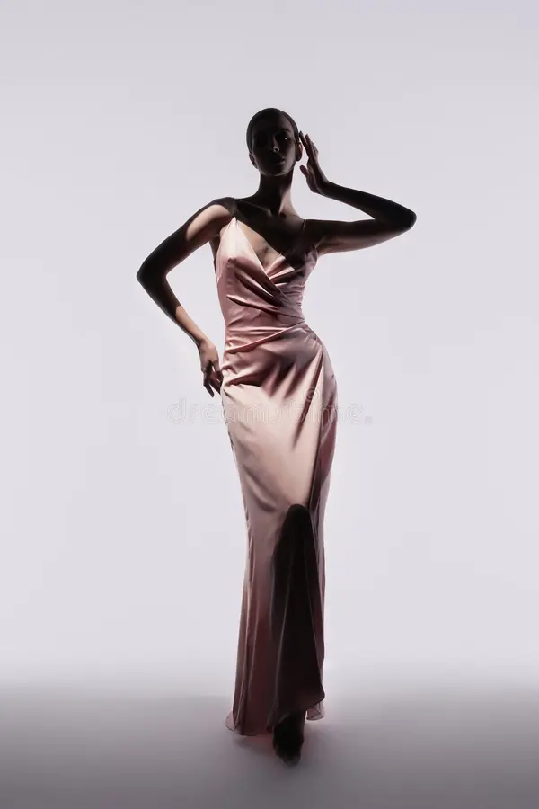
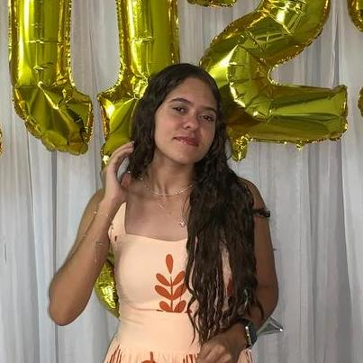
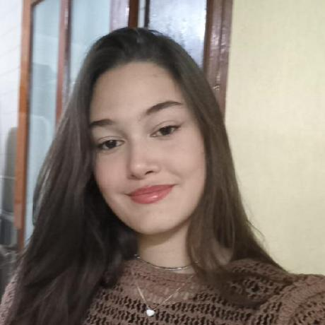
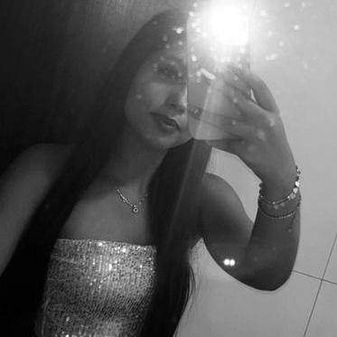
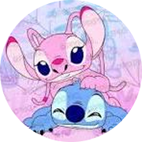

Queremos que cada peça seja mais que estilo — uma forma de expressar quem você é com confiança, beleza e propósito.
Na MInz, nosso compromisso vai além da moda: queremos transformar o dia a dia das pessoas por meio da elegância e da autoconfiança. Acreditamos que vestir-se bem é um ato de amor-próprio — e é por isso que buscamos melhorar significativamente a vida de cada pessoa que escolhe vestir nossas criações.

O que nos move
Nossa missão é tornar a moda elegante acessível e atemporal, oferecendo roupas que combinem sofisticação, conforto e personalidade. Queremos inspirar mulheres a se sentirem confiantes em todas as ocasiões, traduzindo sua essência em cada look.
Nosso horizonte
Ser reconhecida como uma marca referência em moda elegante no Brasil e no mundo, conectando estilo e propósito e construindo uma comunidade apaixonada por autenticidade e beleza em todos os detalhes.
Cada coleção é um convite para vestir a sua melhor versão!
Nosso Time
Na Minz, a elegância está nos detalhes — e nossa equipe de
desenvolvedores reflete isso. Com paixão e dedicação, criamos uma
experiência digital única para quem valoriza moda elegante e social

Melissa Gabrielly de Freitas
Líder técnica da equipe. Organiza, orienta e mantém o alto padrão
que a Minz representa.

Manuela Caetano Freitas
Desenvolvedora full stack versátil. Sempre pronta para conectar
visual e funcionalidade com elegância.

Júlia Rohwedder dos Anjos
UX/UI designer que entende de moda e navegação. Ela transforma
estilo em experiência fluida.
Nathália Nascimento Reis
Back-end precisa e dedicada. Cuida para que tudo funcione rápido e
com segurança por trás das cortinas.

Ana Julia de Souza Ramos
Front-end apaixonada por design limpo e responsivo. Garante que o
site da Minz seja bonito em qualquer tela.